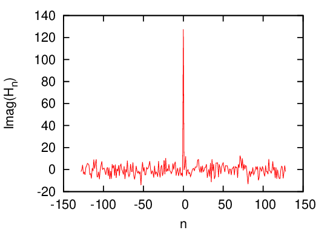
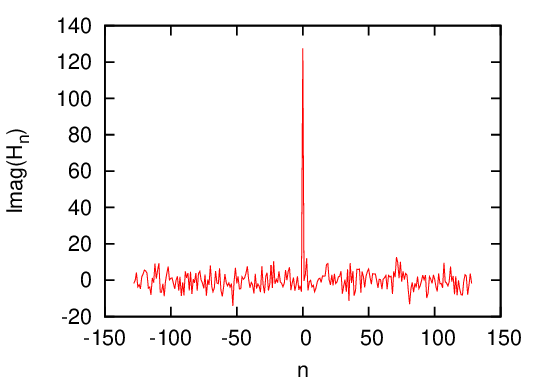

B.3 Details on FFT codes provided by the Numerical recipes book[2]
The following is about a specific FFT subroutine provided by the Numerical recipes
book[2]. This is not a general case.
The input and output of the DFT are usually complex numbers. In the
implementation of FFT algorithm provided by Numerical recipes book[2], to avoid
using complex numbers, the algorithm adopts the real number representation of the
complex numbers. In this scheme, two elements of a real number array are
used to store one complex number. To store a complex array “cdata” of
length N, we will need a real number array “rdata” of length 2N. The first
elements of array “rdata” will contain the real part of “cdata(1)”, the second
elements of “rdata” will contain the imaginary part of “cdata(1)”, and so
on.
To test the correctness of the above statement, I generated a real number array
with length N = 2 × 28 by using a random generating routine and calculate the DFT
of the array with two methods. The real array generated by the random generator
are considered to be a real number representation of a complex array with
length N∕2. Using the real array as the input of the FFT routine (the code in
˜/project_new/fft). To check the correctness of my understanding of the input
and output of the FFT, I manually convert the real number of length N
to a complex array with length N∕2, and use directly the summation in
Eq. (67) to calculate the DFT. The output I got is obviously a complex
array with length N∕2. Then I manually convert the complex array to a
real number array of length N and plot the output in Fig. 7 with dashed
line. The results in Fig. 7 indicates the results given by the FFT and the
naive method used by me agree with each other well. This proves that my
understanding of the input and output of FFT (especially the storage arrangement)
is correct.
To clearly show the output of FFT, we recover the real and imaginary part of
DFT from the output of FFT and plots the data as a function of their corresponding
frequency. The results are given in Fig. 8.

 
